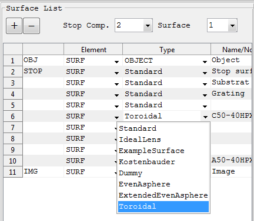
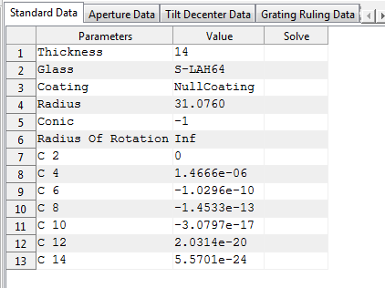
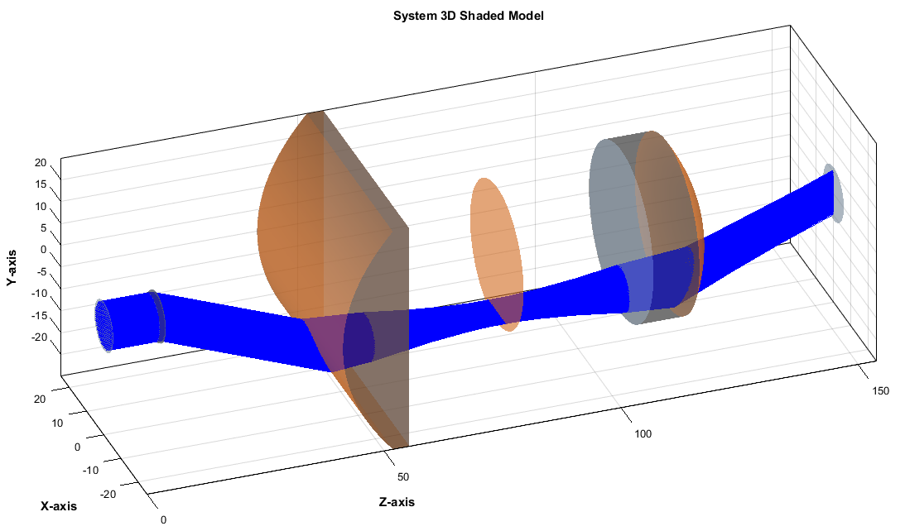

Add New Surface Types
The surface module of the MatLightTracing toolbox ( located at ...\MatLightTracer_GitHub\1. System_Building_Blocks_Package\Optical_Elements_Module\Surface_Module) has two main folders:
1. Surface
Here a struct 'Surface' is defined with all properties which are common to all surface types such as Type, Radius, Conic, Thickness, Glass, ...
The " Type " field determines the specific class of surface type to which the current surface belongs. For instance, the Type field could be Standard, EvenAsphere,...
In addition to the fields common to all surface types, the Surface struct has an additional field called "UniqueParameres" which is used to hold parameters which are unique to certain type of surface. The UniqueParameres field is struct by itself which can have different sub-fields depending on the surface type.
For instance, for EvenAsphere surface type, the polynomial coefficients are fields of the UniqueParameres struct. But the UniqueParameres of the Standard surface is just an empty struct as there are no additional parameters unique to Standard surface types.
2. Surface_Defintions
This folder has the definition files of each surface type in the MatLightTracer toolbox. The name of the surface type definition files should be the same as the surface type name. For instance Standard types are defined in the file named Standard.m and EvenAsphere surface type is defined in Matlab function file named EvenAsphere.m.
With the MatLightTracing it is simple to extend supported surface types by adding a new surface types. It requires writing a separate Matlab function which follows certain common format described in this section. Once the function is written and included in the Surface definition folder, the new surface can be used in any optical systems as any other existing surface types.
Let us assume we want to add an Toroidal surface type, then we have to follow the following steps.
Step 1: Surface Parameter Identification
Identify the parameters used in the new surface type to be defined. The radius of curvature and conic constant are common to all surface types so you need to find any additional parameter required. In the case of Toroidal surface we need
Step 2: Add a function named 'Toroidal.m' to the following folder
'...\MatLightTracer_GitHub\1. System_Building_Blocks_Package\Optical_Elements_Module\Surface_Module\Surface_Definitions'.
These functions all have the following common format
[ returnDataStruct] = Toroidal (returnFlag, uniqueParameters ,inputDataStruct)
NB. The inputDataStruct and returnDataStruct may vary depending on the return type required.
Now based on the return flag, the function computes different things as follows
1: About the surface
inputDataStruct:
empty
Output Struct:
returnDataStruct.Name
returnDataStruct.IsGratingEnabled
returnDataStruct.ImageFullFileName
returnDataStruct.Description
Source Code:
surfName = {'Toroidal','TORD'}; % display name
% look for image description in the current folder and return
% full address
[pathstr,name,ext] = fileparts(mfilename('fullpath'));
imageFullFileName = {[pathstr,'\Surface.jpg']}; % Image file name
description = {['Toroidal: Used to define standard conical surfaces.']}; % Text description
returnDataStruct = struct();
returnDataStruct.Name = surfName;
returnDataStruct.IsGratingEnabled = 1;
returnDataStruct.IsExtraDataEnabled = 1;
returnDataStruct.ImageFullFileName = imageFullFileName;
returnDataStruct.Description = description;
Description:
Return the general information related with the current surface type.
2: Surface specific 'UniqueSurfaceParameters' table field names and initial values in Surface Editor GUI
inputDataStruct:
empty
Output Struct:
returnDataStruct.UniqueParametersStructFieldNames
returnDataStruct.UniqueParametersStructFieldDisplayNames
returnDataStruct.UniqueParametersStructFieldTypes
returnDataStruct.DefaultUniqueParametersStruct
Source Code:
uniqueParametersStructFieldNames = {'RadiusOfRotation','C2','C4','C6','C8','C10','C12','C14'};
uniqueParametersStructFieldDisplayNames = {'Radius Of Rotation','C 2','C 4','C 6','C 8','C 10','C 12','C 14'};
uniqueParametersStructFieldTypes = {'numeric','numeric','numeric','numeric','numeric', 'numeric','numeric','numeric'};
defaultUniqueParametersStruct = struct();
defaultUniqueParametersStruct.RadiusOfRotation = Inf;
defaultUniqueParametersStruct.C2 = 0;
defaultUniqueParametersStruct.C4 = 0;
defaultUniqueParametersStruct.C6 = 0;
defaultUniqueParametersStruct.C8 = 0;
defaultUniqueParametersStruct.C10 = 0;
defaultUniqueParametersStruct.C12 = 0;
defaultUniqueParametersStruct.C14 = 0;
returnDataStruct = struct();
returnDataStruct.UniqueParametersStructFieldNames = uniqueParametersStructFieldNames;
returnDataStruct.UniqueParametersStructFieldDisplayNames = uniqueParametersStructFieldDisplayNames;
returnDataStruct.UniqueParametersStructFieldTypes = uniqueParametersStructFieldTypes;
returnDataStruct.DefaultUniqueParametersStruct = defaultUniqueParametersStruct;
Description:
Returns the names, display names, data types, and default values of all fields of the UniqueParameters struct of the current surface type.
3: Surface specific 'Extra Data' table names and initial values in Surface Editor GUI
inputDataStruct:
empty
Output Struct:
returnDataStruct.UniqueExtraDataName
returnDataStruct.DefaultUniqueExtraData
Source Code:
uniqueExtraDataName = {'ZernikeStandardSagCoefficients'};
defaultUniqueExtraData = [0];
returnDataStruct = struct();
returnDataStruct.UniqueExtraDataName = uniqueExtraDataName;
returnDataStruct.DefaultUniqueExtraData = defaultUniqueExtraData;
Description:
This is used to hold an array of numbers associated with the given surface. This is used if the surface has for example so many polynomial coefficients.
4: Return the surface sag at given xyGridPoints computed from rayPosition ( Used for plotting the surface)
inputDataStruct:
inputDataStruct.X
inputDataStruct.Y
Output Struct:
returnDataStruct.MainSag
returnDataStruct.AlternativeSag
Source Code:
surfaceRadius = inputDataStruct.Radius;
surfaceConic = inputDataStruct.Conic;
X = inputDataStruct.X;
Y = inputDataStruct.Y;
radiusOfRotation = surfaceParameters.RadiusOfRotation;
C2 = surfaceParameters.C2;
C4 = surfaceParameters.C4;
C6 = surfaceParameters.C6;
C8 = surfaceParameters.C8;
C10 = surfaceParameters.C10;
C12 = surfaceParameters.C12;
C14 = surfaceParameters.C14;
mainSag = computeToroidalSurfaceSag(surfaceRadius,surfaceConic,...
radiusOfRotation,C2,C4,C6,C8,C10,C12,C14,X,Y);
returnDataStruct = struct();
returnDataStruct.MainSag = mainSag;
returnDataStruct.AlternativeSag = mainSag;
Description:
NB: X and Y are vectors of values corresponding to points on XY plane for which the surface sag has to be computed. The function to compute the surface sag can be either placed in the same function as the surface definition or can be just a separate function. But it is recommended is to keep everything here in the single surface definition file so that addition, edition and removal of any surface types becomes very easy.
5: Paraxial ray trace results (Ray height and angle)
inputDataStruct:
inputDataStruct.InputParaxialRayParameters
inputDataStruct.IndexBefore
inputDataStruct.IndexAfter
inputDataStruct.Wavelength
inputDataStruct.ReflectionFlag
inputDataStruct.ReverseTracingFlag
Output Struct:
returnDataStruct.OutputParaxialRayParameters
Source Code:
y = inputDataStruct.InputParaxialRayParameters(1,:);
u = inputDataStruct.InputParaxialRayParameters(2,:);
reverseTracing = inputDataStruct.ReverseTracingFlag;
reflection = inputDataStruct.ReflectionFlag;
indexBefore = inputDataStruct.IndexBefore;
indexAfter = inputDataStruct.IndexAfter;
surfaceRadius = inputDataStruct.Radius;
% the height doesnot change
yf = y;
% for angle compute based on the direction of propagation
if ~reverseTracing
%forward trace
c = 1/surfaceRadius;
n = indexBefore;
nPrime = indexAfter;
else
%reverse trace
c = -1/surfaceRadius;
n = indexAfter;
nPrime = indexBefore;
end
if reflection
n = -n;
end
paI = u+yf*c; %The yui method generates the paraxial angles of incidence
% during the trace and is probably the most common method used in computer programs.
uf = u+((n/nPrime)-1)*paI;
outputParaxialRayParameters = [yf,uf]';
returnDataStruct = struct();
returnDataStruct.OutputParaxialRayParameters = outputParaxialRayParameters;
Description:
Since the paraxial ray tracing calculation is simple it is just done right here in the code. But it can also be done in a separate function.
6: New ray direction for real ray tracing
inputDataStruct:
inputDataStruct.RayDirection
inputDataStruct.LocalSurfaceNormal
inputDataStruct.IndexBefore
inputDataStruct.IndexAfter
inputDataStruct.WavelengthInUm
inputDataStruct.DiffractionOrder
inputDataStruct.GratingVectorDirection
inputDataStruct.GratingLinesPerMicrometer
Output Struct:
returnDataStruct.NewLocalRayDirection
returnDataStruct.TIR
Source Code:
rayDirection = inputDataStruct.RayDirection;
localSurfaceNormal = inputDataStruct.LocalSurfaceNormal;
indexBefore = inputDataStruct.IndexBefore;
indexAfter = inputDataStruct.IndexAfter;
wavelengthInUm = inputDataStruct.WavelengthInUm;
diffractionOrder = inputDataStruct.DiffractionOrder;
gratingVectorDirection = inputDataStruct.GratingVectorDirection;
gratingLinesPerMicrometer = inputDataStruct.GratingLinesPerMicrometer;
% Use the general snells law
[newLocalRayDirection,TIR] = computeGeneralRefractionReflection ...
(rayDirection,localSurfaceNormal,indexBefore,indexAfter,...
wavelengthInUm,diffractionOrder,gratingVectorDirection,gratingLinesPerMicrometer);
returnDataStruct = struct();
returnDataStruct.NewLocalRayDirection = newLocalRayDirection;
returnDataStruct.TIR = TIR;
Description:
The new ray direction for real ray tracing can usually be computed using the general_reflection_refraction routine which uses the generalized vectorial Snells law together with grating equations for computing the new ray direction after an interface. But this option is provided here and explicitly open for programming in order to allow user defined algorithms used for refracted and reflected ray directions.
7: Return the function values of F(X,Y,Z) at the given ray intersection points
inputDataStruct:
inputDataStruct.RayIntersectionPoint
Output Struct:
returnDataStruct.Fxyz
Source Code:
R = surfaceParameters.RadiusOfRotation;
if abs(R) == Inf
R = sign(R)*10^12; % Since Inf results in NaN
end
c = (1/inputDataStruct.Radius);
k = inputDataStruct.Conic;
C2 = surfaceParameters.C2;
C4 = surfaceParameters.C4;
C6 = surfaceParameters.C6;
C8 = surfaceParameters.C8;
C10 = surfaceParameters.C10;
C12 = surfaceParameters.C12;
C14 = surfaceParameters.C14;
X = inputDataStruct.RayIntersectionPoint(1,:);
Y = inputDataStruct.RayIntersectionPoint(2,:);
Z = inputDataStruct.RayIntersectionPoint(3,:);
fy = (c.*(Y.^2))./(1+sqrt(1-(k+1)*c^2*(Y.^2)))+...
(C2*Y.^2 + C4*Y.^4 + C6*Y.^6 + C8*Y.^8 + C10*Y.^10 + C12*Y.^12 + C14*Y.^14);
Fxyz = Z - fy - (1/(2*R))*(X.^2 + Z.^2 - fy.^2);
returnDataStruct.Fxyz = Fxyz;
Description:
The numerical method of intersection point computation requires the implicit surface function F(X,Y,Z) . If our surface has analytical formula then that can be just rearranged in the form F(X,Y,Z) = 0 and used directly here.
8: Return F'(X,Y,Z),the derivatives function values of F, at the given ray intersection points and the surface normals
inputDataStruct:
inputDataStruct.RayIntersectionPoint
inputDataStruct.RayDirection
Output Struct:
returnDataStruct.FxyzDerivative
returnDataStruct.SurfaceNormal
Source Code:
c = (1/inputDataStruct.Radius);
conic = inputDataStruct.Conic;
radiusOfRotation = surfaceParameters.RadiusOfRotation;
C2 = surfaceParameters.C2;
C4 = surfaceParameters.C4;
C6 = surfaceParameters.C6;
C8 = surfaceParameters.C8;
C10 = surfaceParameters.C10;
C12 = surfaceParameters.C12;
C14 = surfaceParameters.C14;
X = inputDataStruct.RayIntersectionPoint(1,:);
Y = inputDataStruct.RayIntersectionPoint(2,:);
Z = inputDataStruct.RayIntersectionPoint(3,:);
k = inputDataStruct.RayDirection(1,:);
l = inputDataStruct.RayDirection(2,:);
m = inputDataStruct.RayDirection(3,:);
% Compute its the derivative F'(X,Y,Z)
[Fx,Fy,Fz] = computeToroidalPartialDerivates(c,conic,radiusOfRotation,...
C2,C4,C6,C8,C10,C12,C14,X,Y);
Fderivative = Fx.*k + Fy.*l + Fz.*m;
surfNormal = [Fx;Fy;Fz];
normalizedSurfaceNormal = normalize2DMatrix( surfNormal,1);
returnDataStruct.SurfaceNormal = normalizedSurfaceNormal;
returnDataStruct.FxyzDerivative = Fderivative;
Description:
The numerical method of intersection point computation requires the derivatives of the implicit surface function F'(X,Y,Z) . If our surface has analytical formula then that can be just rearranged in the form F(X,Y,Z) = 0 and then the analytical derivatives could be obtained and used directly here.
9: Return the ray Exit position (This allows the ray input and exit positions to be decoupled)
inputDataStruct:
inputDataStruct.RayIntersectionPoint
Output Struct:
returnDataStruct.LocalExitRayPosition
Source Code:
localRayExitPoint = inputDataStruct.RayIntersectionPoint;
returnDataStruct.LocalExitRayPosition = localRayExitPoint;
Description:
The exit position of the ray from a given surface is usually equal to the intersection point. But in some ideal surfaces it is not the case, for instance in Kostenbauder surface the ray exit position differs from the intersection point depending on the wavelength. To allow modeling of such ideal surfaces the exit ray position computation is made open for user programming.
10: Return any additional path related to the surface that is not given by the surface sag.
inputDataStruct:
inputDataStruct.RayIntersectionPoint
Output Struct:
returnDataStruct.AdditionalPathLength
Source Code:
intersectionPoint = inputDataStruct.RayIntersectionPoint;
% For now just return 0. but shall be corrected
additionalPathLength = 0*intersectionPoint(1,:);
returnDataStruct.AdditionalPathLength = additionalPathLength;
Description:
This is to be used if there is any additional path associated with the surface but not computed from the normal geometric path length computation.
Step 3: Add 'Toroidal' in to list of supported surface of the MatLightTracer toolbox
Once the function Toroidal.m has been successfully implemented and tested, then the final stage of integrating the surface type in to the MatLightTracer toolbox is to add the type in to the supported list. This can be done by modifying the function GetSupportedSurfaceTypes(index) from ('...\MatLightTracer_GitHub\1. System_Building_Blocks_Package\Optical_Elements_Module\Surface_Module') as follows:
function [ fullNames,displayNames ] = GetSupportedSurfaceTypes(index)
%GETSUPPORTEDSURFACES Returns the currently supported surfaces as cell array
if nargin < 1
index = 0;
end
displayNames = {'Standard','Ideal Lens','Example Surface','Kostenbauder',...
'Dummy','Even Asphere','ExtendedEvenAsphere','Toroidal'};
fullNames = {'Standard','IdealLens','ExampleSurface','Kostenbauder','Dummy',...
'EvenAsphere','ExtendedEvenAsphere','Toroidal'};
if index
displayNames = displayNames{index};
fullNames = fullNames{index};
end
end
Results After New Surface Type Addition
Then when the MatLightTracer is restarted the list of supported elements shown as popup menu in the optical element list panel should be updated and the new surface type would appear in the list.

And when the Toroidal surface is selected then the corresponding optical element parameter editor panel should show all properties of the new surface type including those stated as its unique parameters as shown below.

Finally here is an example of optical system containing the new surface type (cylindrical lens). All other features of the MatLightTracer toolbox works exactly in the same way for the new surface type as well.

Created with the Personal Edition of HelpNDoc: Full-featured EBook editor